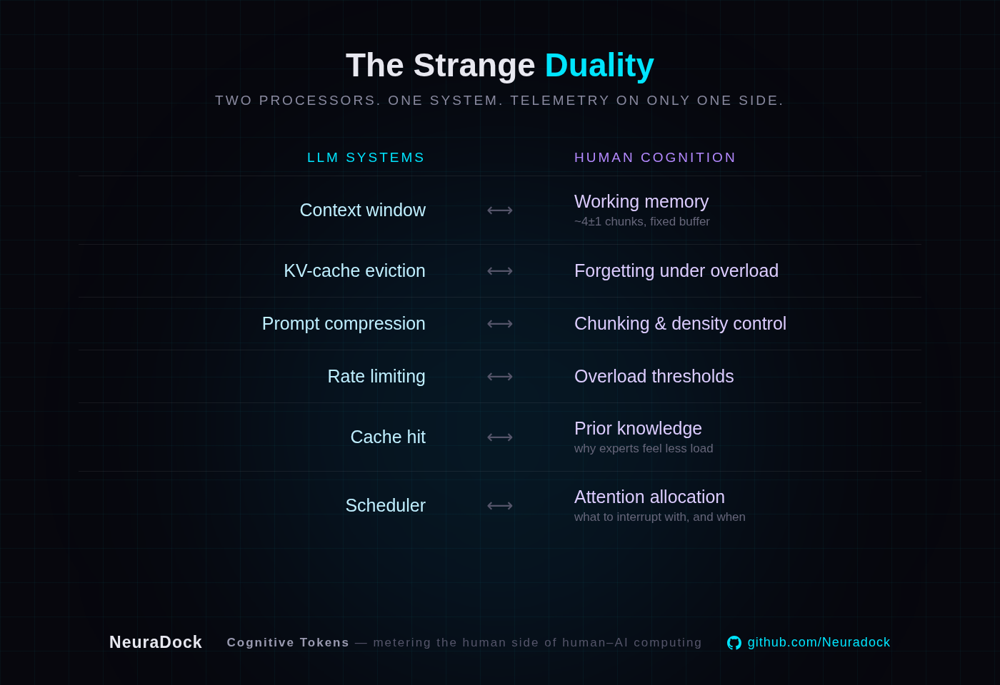

CogLens is an open benchmark for cognitive adaptability in AI systems. We test whether AI can recognize cognitive overload, reduce information density, preserve what matters — and accelerate again when the user recovers.
User input only.
The baseline every model starts from.
Pauses, edits, errors — behavioral signals.
How much can behavior inference improve adaptation?
Real-time cognitive load state.
Does the neural signal add value beyond behavior?
